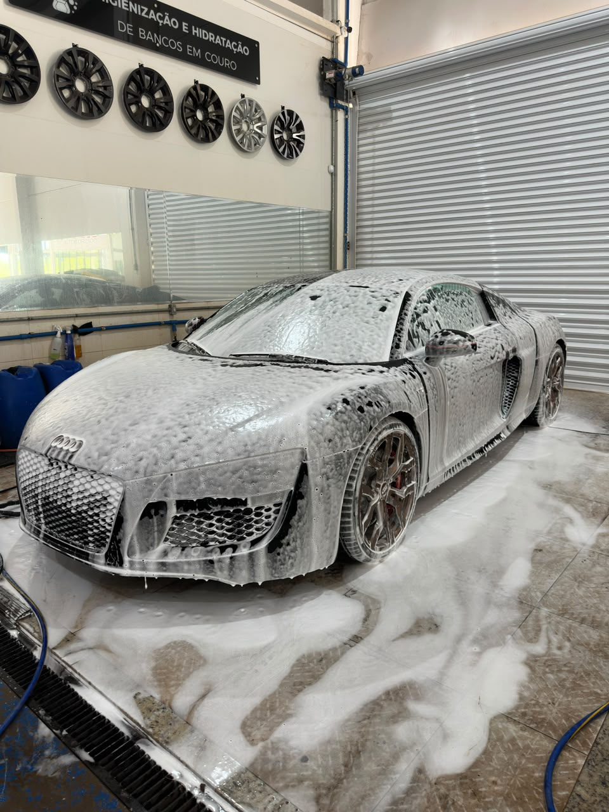

Lavagem detalhada
Descontaminação completa de pintura, rodas e interior, com técnica que evita os microrriscos comuns em lavagens convencionais. Cada etapa segue um processo controlado, sem atalhos.
Ideal para
Quem quer manter o carro impecável no dia a dia, sem correr o risco de desgastar a pintura com lavagens mal feitas.
Principais benefícios
- Remoção segura de sujeira e contaminantes
- Técnica que evita microrriscos na pintura
- Interior e rodas tratados com o mesmo padrão